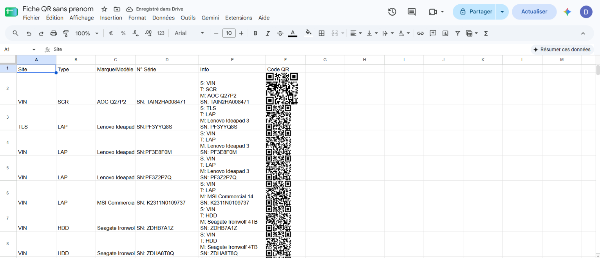
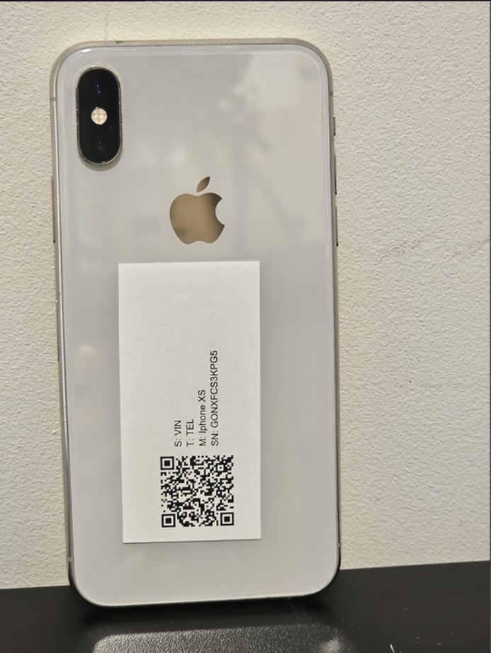

01Contexte
Bobochic Paris est répartie sur quatre sites : le siège de Vincennes, un bureau à Toulouse, un entrepôt à Villebon et une boutique à Beaugrenelle, auxquels s’ajoutent plusieurs collaborateurs en télétravail complet.
À mon arrivée, l’inventaire du parc n’avait plus été mis à jour depuis 2024 environ et aucun équipement n’était étiqueté. Il était donc impossible de suivre le matériel : savoir ce qui existait, où il se trouvait et qui l’utilisait.
02Expression du besoin
Dès mon arrivée, ma première mission a été de mettre à jour l’inventaire, ou de le recréer si nécessaire. L’idée d’ajouter des étiquettes QR sur les équipements est une initiative personnelle. Les objectifs étaient :
- disposer d’un inventaire fiable et à jour de l’ensemble du parc ;
- identifier physiquement un équipement en quelques secondes ;
- savoir quel collaborateur utilise quel matériel.
03Solution et mise en œuvre
- Recensement du parc
Relevé de chaque équipement dans un fichier Google Sheets : site, type, marque et modèle, numéro de série, utilisateur assigné et, pour les acquisitions récentes, date d’achat.
- Codification
Utilisation d’abréviations courtes pour les sites (VIN, TLS…) et les types de matériel (LAP pour les portables, SCR pour les écrans, HDD pour les disques, TEL pour les téléphones).
- Recherche d’une méthode d’étiquetage
Environ deux semaines consacrées à trouver une méthode adaptée pour générer les codes QR et imprimer les étiquettes avec le matériel disponible.
- Génération des QR codes
Adaptation d’une formule existante dans Google Sheets pour générer un QR code statique par ligne. Il ne contient que les données fixes : site, type, modèle et numéro de série. L’utilisateur assigné reste dans une colonne séparée, car il change régulièrement et un QR statique ne peut pas être mis à jour.
- Impression et pose
Impression sur du papier étiquette avec une imprimante standard, puis pose sur chaque équipement des différents sites.
04Tests et résultats
Tests. J’ai testé la lecture des étiquettes avec mon smartphone Android. La première version contenait trop d’informations : le QR code devenait trop dense et n’était pas lisible. J’ai réduit et abrégé les données jusqu’à obtenir un code fiable. Sur Android, l’appareil photo natif affiche directement les informations ; sur iOS, une application de lecture de QR codes est nécessaire.
Résultats. Il est désormais beaucoup plus simple de localiser un équipement et de savoir qui utilise quel ordinateur. Le numéro de série inscrit sur l’étiquette est également celui des fiches de remise et de restitution, ce qui rend l’offboarding plus rapide.
05Limites et perspectives
- Le QR code statique ne peut pas être modifié : toute évolution impose de réimprimer l’étiquette.
- La lecture sur iOS nécessite une application tierce.
- Les équipements des collaborateurs en télétravail ne sont pas étiquetés.
- Perspective : migrer vers un outil de gestion de parc (de type GLPI ou Snipe-IT) avec des QR codes dynamiques renvoyant vers la fiche de chaque équipement.
06Compétences mobilisées
- Gérer le patrimoine informatiqueRecensement et identification des équipements, suivi des affectations et des caractéristiques du parc.
- Travailler en mode projetMission menée de bout en bout : recherche d’une méthode, tests, déploiement sur plusieurs sites.
07Preuves



